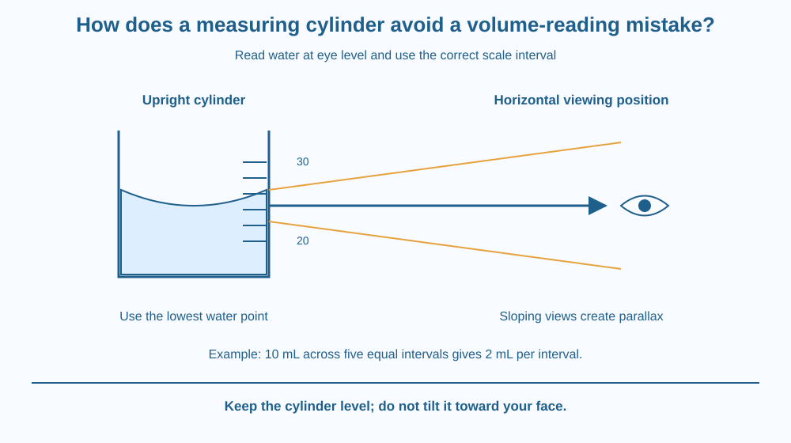

Read a measuring cylinder without introducing a predictable viewing error. Identify the scale interval and meniscus, place your eye correctly, and distinguish a careful reading from a claim of impossible precision. Use a paper model if a real cylinder is unavailable.
Two students look at the same water in the same measuring cylinder. One looks down from above the water surface. The other crouches so their eyes are level with it. They report different volumes even though nobody added or removed any water.
The disagreement need not mean the cylinder changed or either student is dishonest. A marked line on the cylinder and the liquid surface lie at different positions in space. Looking along a sloping line can make them appear aligned differently. Correct technique removes much of this avoidable error.
A measuring cylinder estimates liquid volume using a calibrated scale. Its markings correspond to volumes, commonly expressed in millilitres. The scale is useful only if the cylinder is upright on a reasonably level surface and the correct marks are read.
Start by identifying the value represented by one interval. Suppose marks labelled 20 mL and 30 mL have five equal intervals between them. Each interval represents 2 mL. Count the spaces between marks, not just the number of small lines you happen to notice.
Water in a clean narrow cylinder usually has a curved surface called a meniscus. For an ordinary concave water meniscus, the standard reading is taken at its lowest point. Different liquids can require a different convention, so always know what the instruction specifies.
The eye should be level with the point being read. Looking from too high or too low changes the apparent alignment of the meniscus with the scale. This viewing-position error is called parallax. It is not a change in the actual amount of liquid.
A useful way to check eye level is to bring your line of sight horizontally toward the meniscus. Do not tip the cylinder toward your face. Tilting changes the liquid's position relative to the scale and defeats the purpose of the measurement.
The instrument's resolution limits how finely you should report the result. A cylinder with coarse markings does not justify a long string of decimal places. A careful reader may estimate between marks where appropriate, but the estimate must remain consistent with the scale and viewing conditions.
Accuracy also depends on the cylinder's calibration and suitability. Correct eye position cannot repair a damaged or badly marked instrument. Choose a cylinder whose capacity and divisions suit the amount being measured. A very wide container can make a small volume difference hard to see as a change in height.
Allow bubbles and splashes to settle before reading. Droplets left on the wall or liquid spilled during transfer can complicate a comparison. Good technique controls several small sources of error rather than treating eye position as a magical guarantee of perfection.
Place one pencil in front of another and look from the left, then from the right. Their apparent alignment changes even though neither pencil moves. Objects at different depths do not keep the same apparent alignment from every viewpoint.
For the cylinder, imagine a horizontal sightline connecting the eye, the selected point on the meniscus and the corresponding scale position. Looking along this line reduces parallax.
Draw a second sloping sightline and show how it meets a different mark. The model explains the source of disagreement. It does not require the liquid volume to change or the marks to move.
The SVG shows a cylinder containing water with a concave meniscus. A horizontal sightline passes through the bottom of the curve to an eye symbol at the same height. Two dashed sloping lines show alternative viewing positions.
A scale inset labels a 10 mL span divided into five equal intervals, illustrating a 2 mL interval. The numbers are an instructional example, not data from an experiment.
A separate caption warns against tipping the cylinder. The lesson uses the existing meniscus as a reading feature and does not reteach the molecular mechanism that makes liquid surfaces curve.

School laboratories use measuring cylinders when mixing liquids or comparing sample volumes. Consistent reading technique matters when different groups combine results. Otherwise a difference caused by viewing angle may be mistaken for a scientific effect.
Kitchen measuring jugs use marked levels too, although their wider shapes and coarser markings can make small measurements less precise. For a recipe, that may be acceptable. For a small-volume comparison, a more suitable instrument is helpful.
A medicine dose is a higher-stakes measurement. This lesson does not provide dosing advice; the relevant connection is that appropriate marked devices and the specified reading technique matter whenever a small volume must be measured reliably.
Use a clear drinking glass, water, a ruler or a marked paper strip, and paper. If a proper measuring cylinder is available, use that instead with adult permission. Do not mark a glass by scratching it.
The glass model demonstrates viewing error; it does not become a calibrated measuring cylinder. Do not assign true millilitre values to arbitrary paper marks. Keep the water in the container so a spill does not create a real volume change.
If three students all look from the same incorrect height, their readings might agree closely. Would that agreement prove the volume was measured correctly?
Now compare a large cylinder with widely spaced volume intervals and a smaller cylinder with finer intervals. Explain why choosing a suitable instrument and positioning the eye correctly solve different parts of the measurement problem.
Which point is read for an ordinary concave water meniscus?
Answer: A — The usual convention for water is to read the lowest point of its concave meniscus.
Why should the eye be level with the meniscus?
Answer: C — Eye-level viewing reduces apparent misalignment between the liquid surface and scale.
A 10 mL span contains five equal intervals. What does one interval represent?
Answer: B — Dividing the 10 mL span by five intervals gives 2 mL per interval.
Write a four-step instruction card for reading an ordinary water meniscus. It should include placing the cylinder upright, finding the scale interval, setting eye level and choosing the bottom of the curve.
Then give an example of reporting too many decimal places for a coarse scale. Explain why extra digits on paper do not automatically add information to the measurement. Your card should distinguish an observed reading from its uncertainty.
Several people can make the same mistake and still agree. Agreement is useful evidence of consistency, but a shared viewing error can move every reading in the same direction. A sound method therefore needs a reason for the viewing position, not merely a vote among the observers.
Read a water meniscus at eye level, use the bottom of its curve, and report a volume that matches the scale's useful precision.